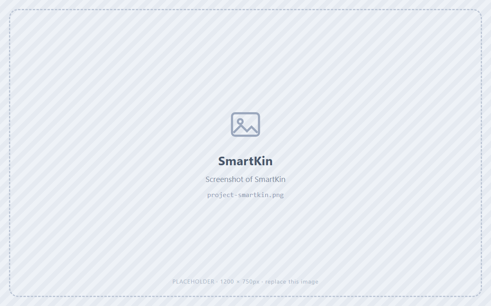

A connected picture of factory performance
SMARTKIN is an internal manufacturing application I built for KinDairy. It brings production orders, machine activity, output, manpower schedules, attendance claims, utility consumption, and quality control into a connected operational workflow.
A production number becomes more useful when people can explain it. Which machines ran the order? How much time was running, idle, or downtime? Who was working in that area? How much electricity and water was consumed? Was the product released on time and without resampling? Does the recorded output agree with SAP? SMARTKIN is built to connect those questions rather than leave each one in a separate report.
The application supports decisions about capacity, labor productivity, resource consumption, quality, and production losses with traceable evidence. Its planning calculations connect the work to be done with the time and people required, supporting efficient processes and cost-effective resource use. The work includes daily operational input, supervisor review, and management reporting.
The hard part: agreeing on what the numbers mean
The hardest problems have often appeared between systems and definitions. An attendance scan, an approved work claim, a machine log, and a SAP confirmation describe different parts of the same day. Joining them without respecting those differences can produce a convincing report with an incorrect result.
- A production day crosses midnight
The factory reports from 06:00 WIB to the following 06:00. Night-shift exits can arrive after that boundary. I had to separate the reporting window from the scan-retrieval window so a late exit could close the correct shift without changing which production day the work belongs to.
- Attendance is not automatically production labor
Being present in an area does not mean a person spent every minute on one order. People move, machines share areas, and several orders can compete for the same pool of labor. The allocation needs explicit device-to-machine relationships and time-based weighting, with a way to inspect who contributed to the result.
- Different processes need different treatment
Mixing, filling, retort, and packing cannot always share one output calculation. A product passing through several stages must not be counted repeatedly as finished output. Machine speeds also change, so using today's master speed for an old reading can silently restate historical OEE.
- A valid comparison needs the same scope
SAP confirmations and local machine logs do not arrive at the same time or always use the same time definitions. Reconciliation has to compare compatible measures across the whole production order. A date filter should select the orders to investigate without accidentally comparing partial local activity with a full-order SAP total.
- Consumption needs complete, comparable readings
Utility reporting has a different rhythm from shift production. A daily electricity value depends on consecutive meter readings; a missing reading cannot be treated as zero. Main meters and submeters can cover the same consumption, so combining them without clear scopes would double-count energy. Water, electricity, and billing periods also need their own units and boundaries.
- Produced does not automatically mean released
QC follows what happens after production: sampling, resampling, rejection, and release. Those events need to stay linked to the right order, with consistent quantities and dates. First-time quality and on-time release answer different questions, so one overall production figure cannot substitute for both.
From operational input to reviewable reports
- Production and machine reporting
Record running, idle, and downtime intervals with their reasons, production order, output, rejects, and relevant process parameters. Shift reports and the machine cockpit connect daily input with the evidence behind production and OEE reporting.
- Manpower scheduling, claims, and activity
Sales demand and confirmed factory readiness drive the automatic calculation of production timelines and manpower requirements, covering direct and daily labor. Employee shifts and group assignments connect the plan with attendance review and approved work claims. Group activity input lets teams explain non-production time in an area instead of leaving every idle period as an unexplained gap.
- Hourly labor allocation and productivity
Connect approved claimed time to machine and order activity. Reports expose regular and overtime hours, employee-level allocation details, and productivity measures such as labor hours per ton, with drill-downs to the contributing records.
- Production-order review and SAP reconciliation
Compare SMARTKIN output, operational hours, and manhours with SAP's mirrored confirmation data. Review mismatches and orders present on only one side, then inspect machine logs and manpower detail to understand the difference.
- Utility consumption and billing
Capture electricity and water readings, apply the relevant consumption and sharing rules, and review daily, weekly, or monthly trends. Completeness indicators, meter-level detail, and billing reports help distinguish an actual consumption change from missing or partial data.
- Quality control and release performance
Record sampling, resampling, released and rejected quantities, and packing rejects against production orders. Quality reporting brings together first-time-quality results, release timing against category targets, and the records behind each outcome.
- Historical controls
Capture the machine speed used for an output reading, preserve accepted production-order facts as versioned validation snapshots, and mark affected orders for review when relevant inputs change. Production-period locks provide a separate control over edits to closed operational periods.
How the pieces work together
- Connect demand with factory readiness
Sales demand establishes the production requirement. The factory confirms readiness, including the production start date and material arrival, giving SMARTKIN the context for its planning calculations.
- Calculate the timeline and manpower
SMARTKIN automatically calculates the production timeline and manpower requirements for direct and daily labor. Connecting these plans helps teams coordinate work and staffing around demand, with process efficiency and cost effectiveness as the purpose of the calculation.
- Capture and review actual activity
Record machine intervals and output, bring in attendance signals, and review the work claims and activity explanations. Capture utility readings and QC sampling, reject, and release records in their respective workflows. Missing-time and detail checks help users find incomplete inputs before trusting the totals.
- Calculate at the right level
Resolve time against production days and shifts. Allocate claimed labor using the relevant device, machine, and hourly activity relationships, then build consistent order and period summaries. Calculate utility consumption within its meter scope and reporting period, and quality results from their sampling and release rules.
- Investigate and validate
Follow a report total into its machine logs and employee allocations. Compare compatible order totals with SAP and validate the reviewed production order, keeping an identifiable revision of its accepted operational facts.
- Handle corrections explicitly
Relevant source changes can make a validated order stale. Revalidation creates another revision while retaining earlier evidence; period locks govern whether the underlying operational records can be edited.
Purpose: process efficiency and cost effectiveness. Coordinate demand, material readiness, production timing, and labor requirements in one planning flow.
My work on SMARTKIN
My work spans the user interface, application services, reporting calculations, and integration across production, manpower, utility, quality, and enterprise reporting. It involves translating operational questions into data relationships, tracing discrepancies back to their source, and refining the workflow with the people who need to use it.
Much of the engineering is investigative. When a night-shift timeline ended too early, the fix required tracing the actual exit scan and the query boundary. When labor appeared against unrelated machines, the question was how the allocation reached those machines through the area mapping. When SAP and SMARTKIN differed, the comparison needed a review of order scope and output selection before changing a formula.
Utility and QC bring additional reporting rules into that work: retaining gaps in meter data, separating overlapping consumption scopes, and connecting release and reject records to the relevant production order. These modules extend the same aim of making a reported result explainable.
I also work on making corrections safe: preserving stored assignments when removing edit fields, keeping historical calculation inputs with their readings, retaining snapshot revisions, and reusing the application's existing screens and APIs so fixes stay consistent across reports.
Architecture built around operational facts
The application combines a web interface for daily operations, application services that manage workflows and validation, and a central data layer for operational records. Shared calculations support machine time, manpower allocation, production output, utility consumption, and quality reporting, with consistent definitions within each workflow.
Each row shows a main workflow. Production and manpower totals also feed order reconciliation; utility and QC retain their own reporting measures. The dashed arrow marks the SAP reference.
These sources retain distinct responsibilities. Attendance data supplies presence and movement evidence; approved claims provide the reviewed labor input. The SAP mirror supplies external order and confirmation data. SMARTKIN's validation snapshots preserve its accepted operational facts, while reconciliation continues to compare against SAP data separately.
A key design decision was to make the FR-device-to-machine allocation change effective by production date. Earlier activity retains the legacy work-center rule; newer activity uses direct machine mappings. That makes the formula boundary explicit without treating a formula change as permission to rewrite every earlier result.
A coordinated basis for efficient operations
SMARTKIN now connects operational input, calculation, drill-down, reconciliation, and review in one application. Its value is the ability to move from a reported total to the records and decisions behind it, identify what is incomplete, and correct it through a controlled workflow.
The result is a connected basis for planning production and manpower, reviewing production losses, labor use, utility consumption, quality performance, and comparing actual factory activity with SAP confirmations. These calculations and review tools support efficient processes and cost-effective decisions about time, staffing, and resources.
The main lesson is that trust comes from explicit definitions and visible evidence. More charts do not resolve a missing exit scan, a shared labor pool, or a changed historical speed. Handling those details carefully is what makes the reporting useful.